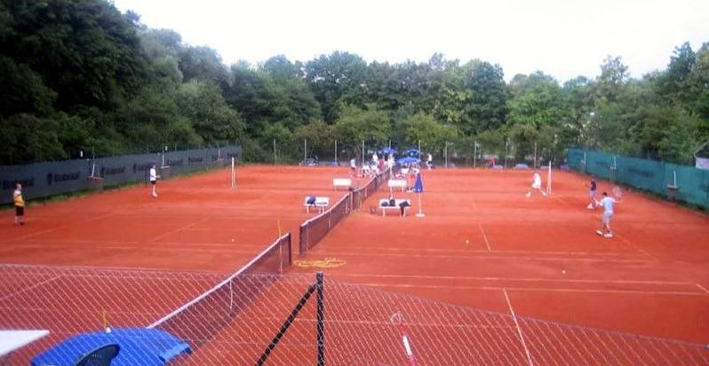

Start › Verein
Wir über uns
T.C. Philathlos München e.V., Tennisverein, gegründet 1995. Spielbetrieb auf der Tennisanlage bei der Beach-Arena.

Kinder und Jugendliche im Mittelpunkt
Hauptziel des Vereins ist die Förderung der Kinder und Jugendlichen. Die Erwachsenen unterstützen dieses Ziel mit Freude.
Gemeinsam mit unseren Mitgliedern wollen wir durch neue Ideen und Events dem Verein neue Mitglieder zuführen und die vorhandenen Mitglieder langfristig an den Club binden.
2010
Stützpunktverein „Integration durch Sport“
Für unser Engagement, Kinder und Familien unterschiedlicher Herkunft in den Vereinssport zu holen.
Wo Spaß im Spiel ist, kommt das Interesse von allein.
Keine Aufnahmegebühr
Beitragsordnung
| Mitgliedschaft | Jahresbeitrag |
|---|---|
| Einzelmitglieder | |
| Erwachsene | 220 € |
| Studentinnen und Studenten | 110 € |
| Seniorinnen und Senioren | 110 € |
| Kinder bis 12 Jahre | 60 € |
| Kinder und Jugendliche von 12 bis 18 Jahren | 110 € |
| Paare und Familien | |
| Ehepaare | 360 € |
| Familie mit 1 Kind | 400 € |
| Familie mit 2 Kindern | 450 € |
| Familie mit mehr als 2 Kindern | 500 € |
| Ohne Spielbetrieb | |
| Passive Mitgliedschaft | 40 € |
Fragen zur Mitgliedschaft? Christos hilft gern weiter: 0172 913 89 65.
Mannschaften
Spieljahr 2014. Spielbetrieb: Tennisanlage bei der Beach-Arena.
- Herren
- Herren 30
- Herren 50
- Juniorinnen
- Junioren
- Knaben
- Bambino
- Kleinfeldtennis